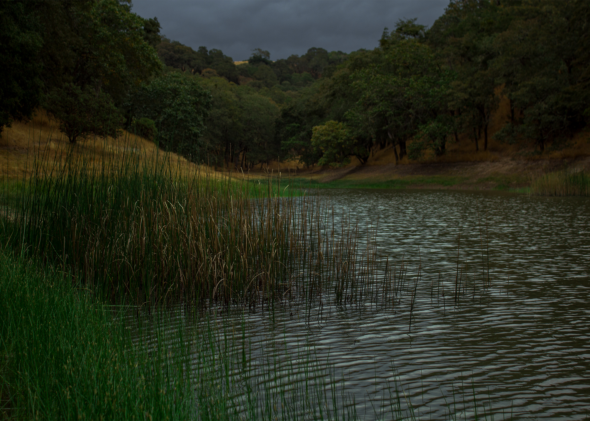

<div class="slideshow-container">


  <div class="mySlides fade">
    <div class="numbertext">1 / 3</div>
    
    <div class="text">View of Windsor from Foothills</div>
  </div>

  <div class="mySlides fade">
    <div class="numbertext">2 / 3</div>
    
    <div class="text">Lake in Foothills</div>
  </div>

  <div class="mySlides fade">
    <div class="numbertext">3 / 3</div>
    
    <div class="text">My dog in Foothills</div>
  </div>

  <!-- Next and previous buttons -->
  <a class="prev" onclick="plusSlides(-1)">&#10094;</a>
  <a class="next" onclick="plusSlides(1)">&#10095;</a>
</div>
<br>

<!-- The dots/circles -->
<div style="text-align:center">
  <span class="dot" onclick="currentSlide(1)"></span>
  <span class="dot" onclick="currentSlide(2)"></span>
  <span class="dot" onclick="currentSlide(3)"></span>
</div>
